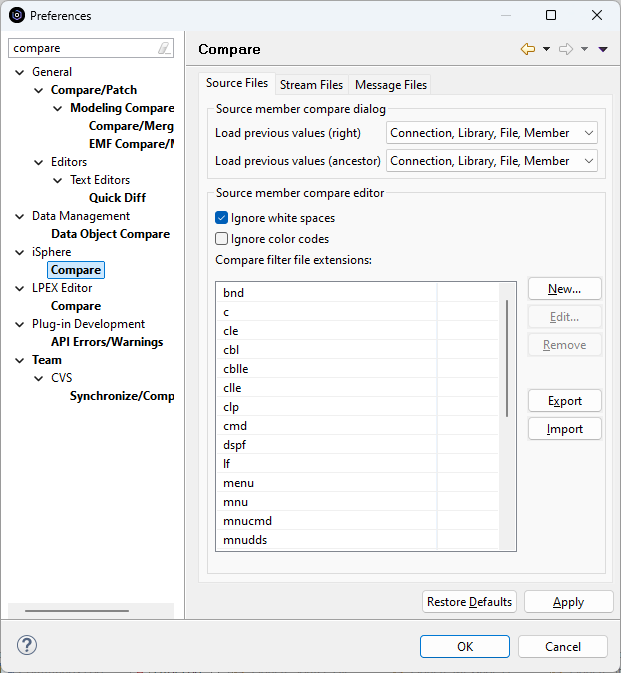
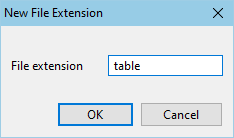
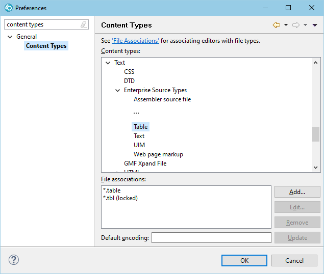

The available options for comparing source members are:
| Load previous values (right) | - | Specifies
whether previous values of the right member are loaded when opening the source member
compare dialog. The values selected are preserved. All other values are taken from the
Left Member. This option is useful, when you want to compare members from one source file with the members of another source file. In that case you would select option Connection, Library, File. |
| Load previous values (ancestor) | - | Specifies whether previous values of the ancestor member are loaded when opening the source member compare dialog. The values selected are preserved. All other values are taken from the Left Member. |
| Ignore white spaces | - | Specifies whether white spaces are ignored when comparing source members. |
| File extensions | - | Specifies the file extensions that are assigned to the Ignore Date Column filter when comparing source members. |
| Note: The iSphere source compare filters are installed with the iSphere Compare Filters plug-in. That plug-in is available for RDi 9.5+ because it depends on Eclipse 4.4. |
Sometimes you may want to add new content types to the iSphere Compare Filter, for example inn case you use a Software Change Management System (CMS) for managing your development process. Then it could happen, that your CMS introduces new source member types, such as TABLE or VIEW for SQL tables and views. In order to enable the compare filter for these types, you need to add a new content type to the Eclipse Content Types for each new source member type. So for the new source member type TABLE, you need to do the following steps:
Open the iSphere Compare preferences and click the [New] button to add a new type:

Apply your changes.
Open the Eclipse Content Type preferences and add a table file extension to an existing content type, which describes your new type best:

Click the [OK] button to save your changes.